El Chinito Sanguchería
Proyecto de Rebranding
Proyecto de rebranding. Con más de 60 años de trayectoria, El Chinito Sanguchería es un pilar de la gastronomía limeña. No obstante, frente a un mercado altamente competitivo y visual, renovar su identidad es clave para mantener su relevancia. Este proyecto propone una evolución gráfica que proyecta el valor real de la marca, equilibrando su legado artesanal con una estética contemporánea. Todo bajo el concepto rector: 'Tradición que despierta el sabor'.
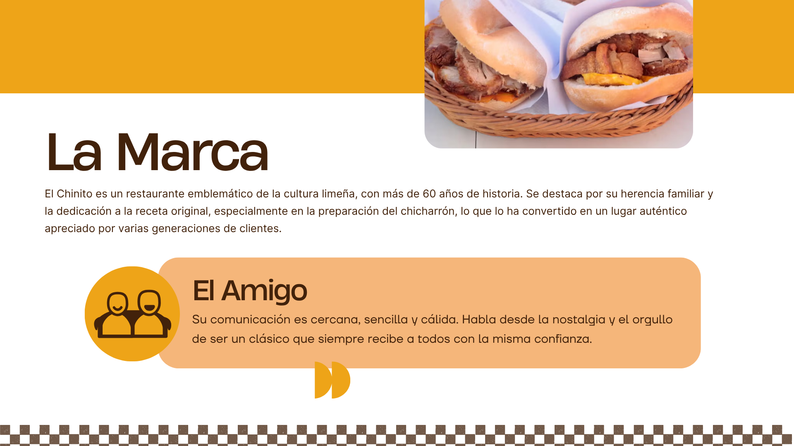
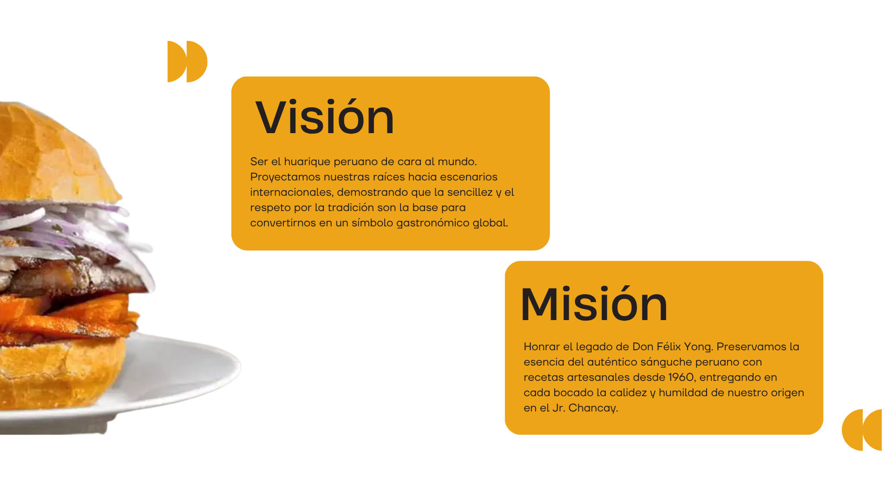
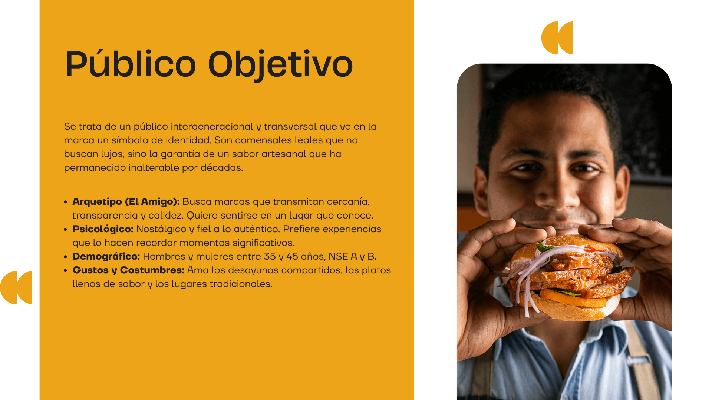
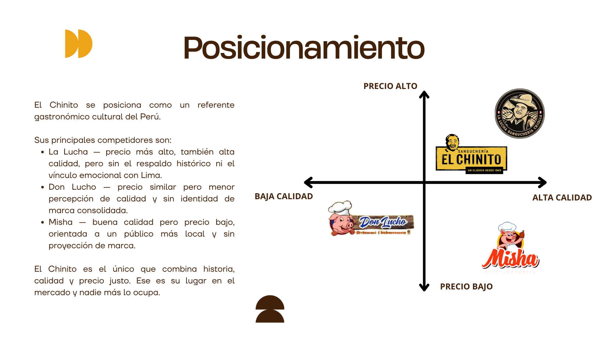
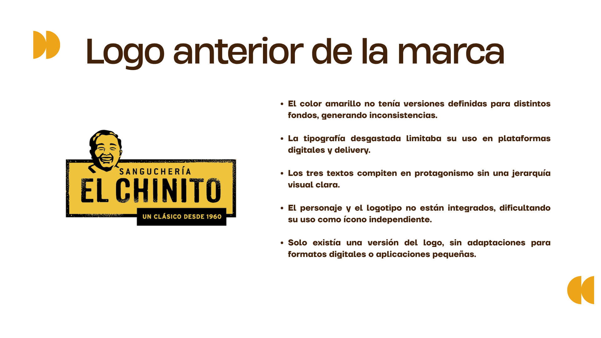
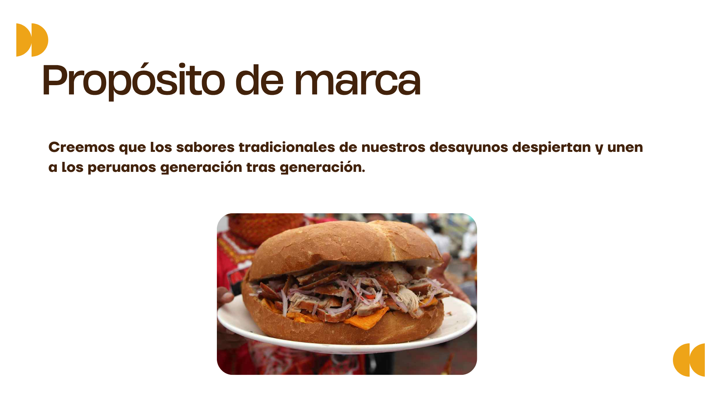
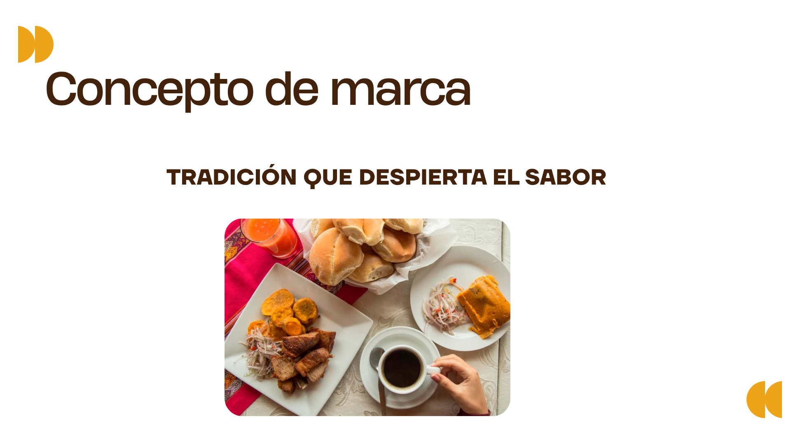
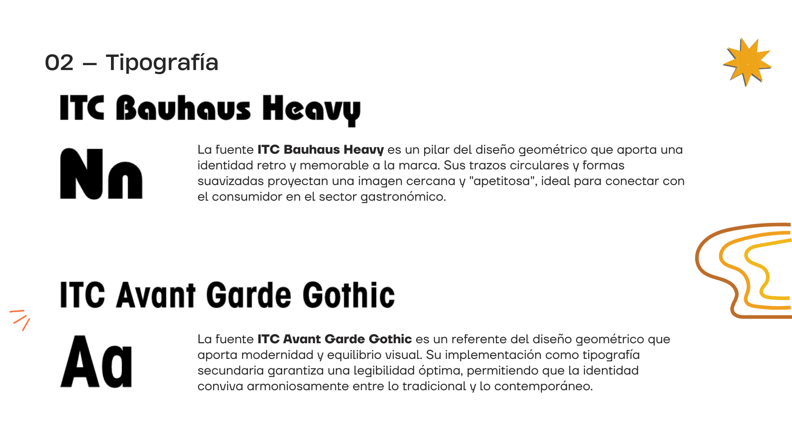
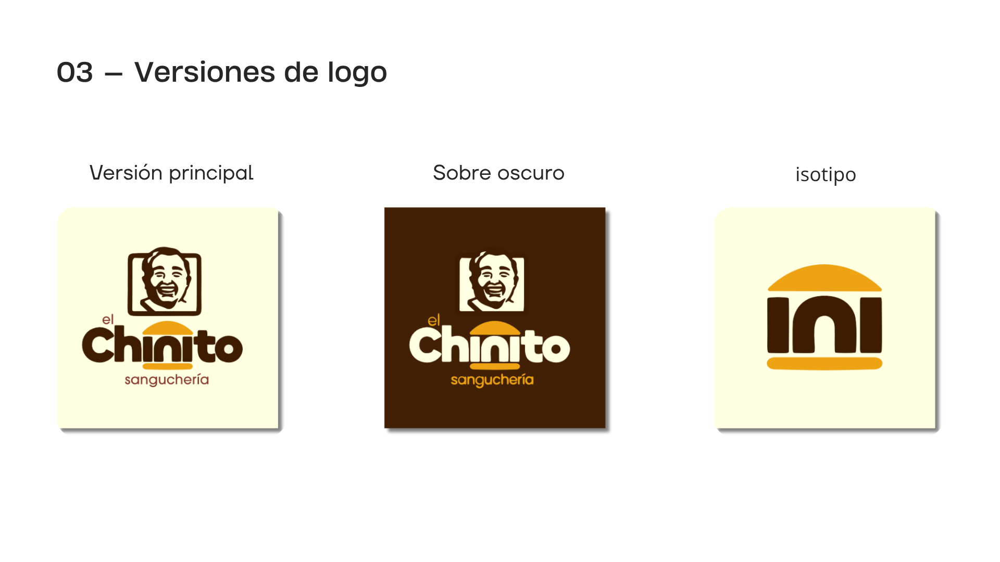
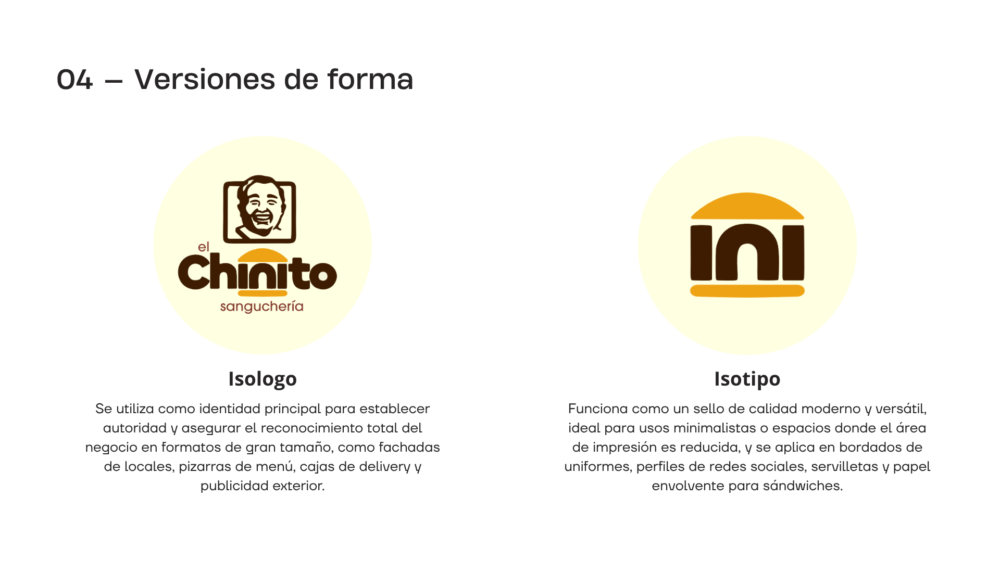
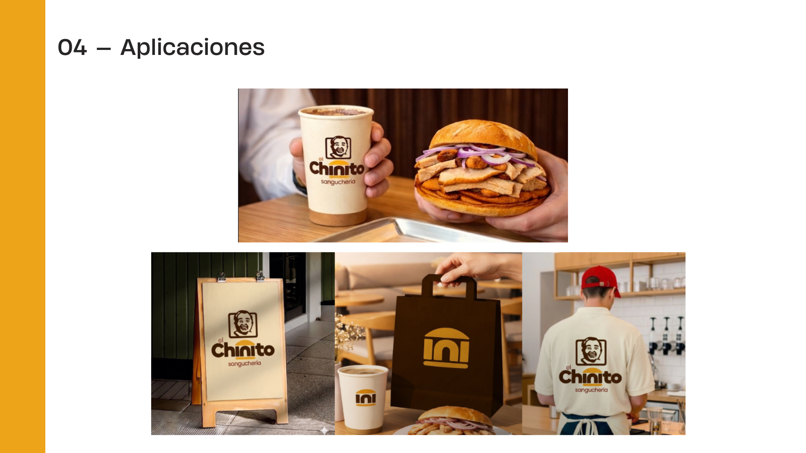
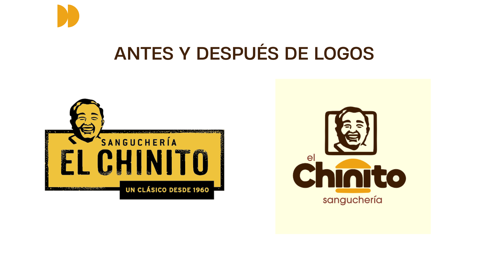
Rebranding
Diseño
Identidad Visual
Gastronomía